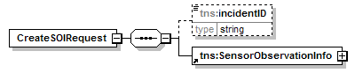
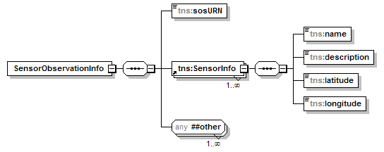

@Endpoint public class SensorServiceEndpoint extends Object implements com.saic.uicds.core.infrastructure.util.ServiceNamespaces
The UICDS Sensor Service provides the ability for UICDS users to:
The request to create an SOI work product is shown in the following diagram: 
The create allows the client to create an SOI work product and optionally associate it with an incident.
The SensorObservationInfo type is shown in the following data structure:

The sosURN should be the URN of the SOS interface for the sensor. The SensorInfo contains descriptive data about the sensor or sensor suite. The location in this element should be in WGS84 decimal degrees and indicate where the sensor should be displayed on a map. The any element is used to contain the actual SOS GetObservation and Observation elements.
Note that each SOI work product may contain any number of SensorInfo elements and any number of GetObservation and Observation elements in the any element for one or more external sensors. Best practice for creating SOI work products is to include a SensorInfo and GetObservation element for each SOS offering by the SOS that is to be associated to the incident. The SensorObservationInfo.SensorInfo.name and GetObservation.offering values should be used as the common value to match elements. If an Observation element is included for a sensor its gml.name element should match the SensorObservationInfo.SensorInfo.name and GetObservation.offering values.
The Sensor Service manages UICDS work products of type "SOI".
NS_AgreementService, NS_AlertService, NS_BroadcastService, NS_DirectoryService, NS_IAPService, NS_Incident, NS_IncidentCommandStructureService, NS_IncidentManagementService, NS_InterestGroupService, NS_LEITSCService, NS_LoggingService, NS_MapService, NS_NotificationService, NS_OasisCAP, NS_ProfileService, NS_ResourceInstanceService, NS_ResourceManagementService, NS_ResourceProfileService, NS_SensorService, NS_TaskingService, NS_WorkProductService| Constructor and Description |
|---|
SensorServiceEndpoint() |
| Modifier and Type | Method and Description |
|---|---|
org.uicds.sensorService.CreateSOIResponseDocument |
CreateSOI(org.uicds.sensorService.CreateSOIRequestDocument requestDoc)
Creates an Sensor Observation Info (SOI) work product and optionally associate it to an
incident.
|
org.uicds.sensorService.GetSOIResponseDocument |
GetSOI(org.uicds.sensorService.GetSOIRequestDocument requestDoc)
Returns an Sensor Observation Info (SOI) work product for the input work product
identification.
|
org.uicds.sensorService.GetSOIListResponseDocument |
GetSOIList(org.uicds.sensorService.GetSOIListRequestDocument requestDoc)
Returns a list of Sensor Observation Info (SOI) work products associated with a given
incident.
|
org.uicds.sensorService.UpdateSOIResponseDocument |
UpdateSOI(org.uicds.sensorService.UpdateSOIRequestDocument requestDoc)
Updates an Sensor Observation Info (SOI) work product.
|
@PayloadRoot(namespace="http://uicds.org/SensorService",
localPart="CreateSOIRequest")
public org.uicds.sensorService.CreateSOIResponseDocument CreateSOI(org.uicds.sensorService.CreateSOIRequestDocument requestDoc)
CreateSOIRequestDocument - @PayloadRoot(namespace="http://uicds.org/SensorService",
localPart="UpdateSOIRequest")
public org.uicds.sensorService.UpdateSOIResponseDocument UpdateSOI(org.uicds.sensorService.UpdateSOIRequestDocument requestDoc)
UpdateSOIRequestDocument - @PayloadRoot(namespace="http://uicds.org/SensorService",
localPart="GetSOIRequest")
public org.uicds.sensorService.GetSOIResponseDocument GetSOI(org.uicds.sensorService.GetSOIRequestDocument requestDoc)
GetSOIRequestDocument - @PayloadRoot(namespace="http://uicds.org/SensorService",
localPart="GetSOIListRequest")
public org.uicds.sensorService.GetSOIListResponseDocument GetSOIList(org.uicds.sensorService.GetSOIListRequestDocument requestDoc)
GetSOIListRequestDocument - Copyright © 2012. All Rights Reserved.